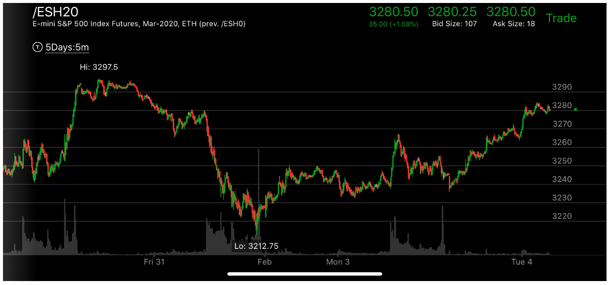
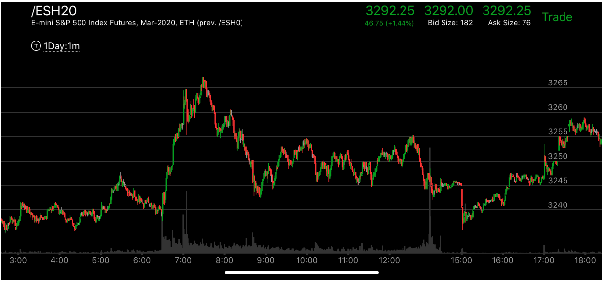

不是平坦的转折点走势
- 不是所有的转折点都是平坦的。现在观察，在牛市的时候，它如果要大跌，那么它的转折点在高点常常是平坦的，
它转折的时候，在高点常常停留很久。然后大跌。而它在底部转折的时候，底部经常不是平坦的，甚至也很难找到
一个明确的两段走势。这时，应该应用相对弱势来判断它以及到了转折点。相对弱势常常比低点高不了很多。

图示：8：40它出现了反转的第一浪，为了这个第一浪确认一下，它走平后，继续前进。
显然这个不会让它反转，因为前进的幅度很小。它在8：50开始反弹，越过了前面的走平点，虽然很慢，也形成了加速。
它前面制造了很多真空。一直在震荡前进。8：00破坏了跨越走势后，它连续多段转折上涨，创新高，这样它8：40就是反向第一浪。

图示：8：20它较大幅度拉回，然后反弹很小，再次创新高。这时就不能用这个拉回后创新高
反转的走势来分析，它会在返回在前面的跨越点停留，然后继续涨。

图示:9：00大跌，形成了，立刻反弹，速度很快，9：20走平，然后大涨。9：40，它快速越过了走平点。这样就形成了向下加速的走势。
说明要大涨了。从另外的角度看，它在9：40接近反弹的高点，下跌很快，说明未来一定会回到或者超过这个点2995的。


图示:Feb 图一中，它从低点一下就跃起了10个点。不是一个平坦的点，但是它开始走平很久。
到了图二,开盘后，大幅上涨，说明前面的走平是属于这个上涨的。然后大幅拉回。收盘后，出现了一个快速下跌，
形成了完成走势。另外观察它的最后一浪，低于前面上涨的走平点，说明下跌的速度比较快。
这样就形成了相对弱势。未来会继续上涨。